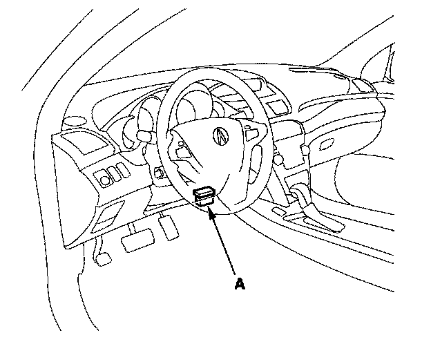
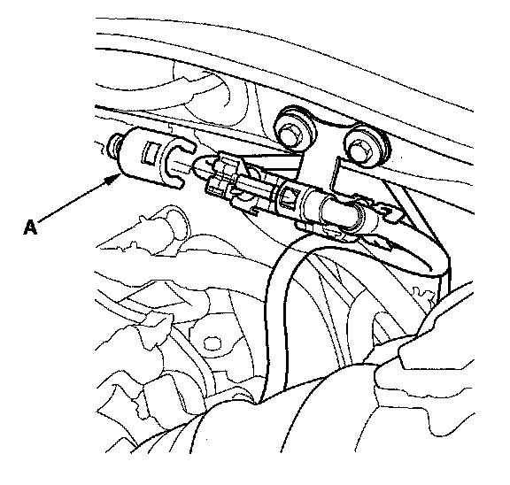
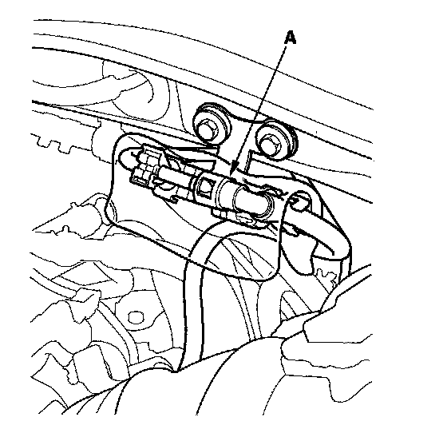
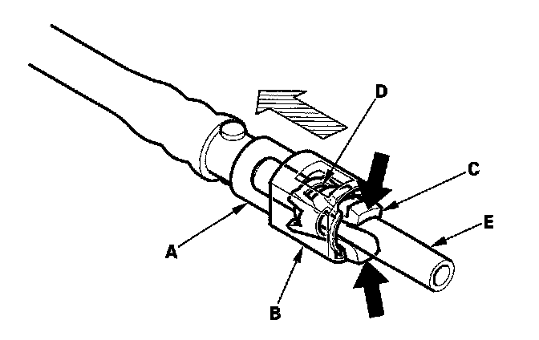
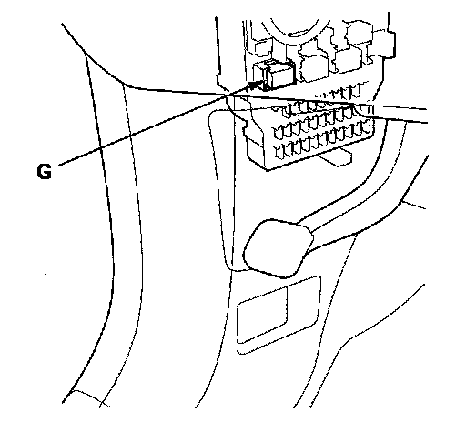
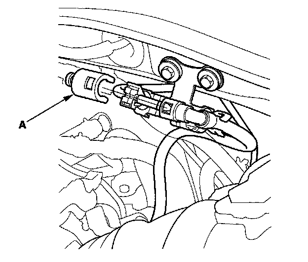
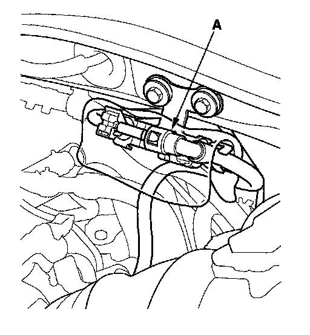
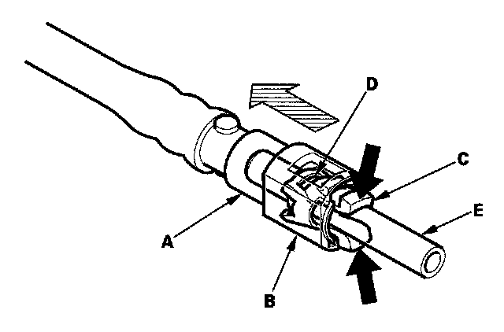

Fuel Pressure Release: Service and Repair
Fuel Pressure RelievingBefore disconnecting fuel lines or hoses, relieve pressure from the system by disabling the fuel pump and then disconnecting the fuel tube/quick connect fitting in the engine compartment.
With the HDS
1. Make sure you have the anti-theft code for the audio system and the navigation system (if equipped).
2. Turn the ignition switch OFF.

3. Connect the HDS to the data link connector (DLC) (A) located under the driver's side of the dashboard.
4. Turn the ignition switch ON (II).
5. Make sure the HDS communicates with the PCM and other vehicle systems. If it does not, go to the DLC circuit troubleshooting.
6. Turn the ignition switch OFF.
7. Remove the fuel fill cap to relieve the pressure in the fuel tank.
8. Turn the ignition switch ON (II).
9. From the INSPECTION MENU of the HDS, select Fuel Pump OFF, then start the engine, and let it idle until it stalls.
10. Turn the ignition switch OFF.
NOTE:
- Do not allow the engine to idle above 1,000 rpm or the PCM will continue to operate the fuel pump.
- A DTC or a Temporary DTC may be set during this procedure. Check for DTCs, and clear them as needed.
11. Turn the ignition switch OFF.
12. Disconnect the negative cable from the battery.

13. Remove the quick-connect fitting cover (A).
14. Check the fuel quick-connect fitting for dirt, and clean it if needed.

15. Place a rag or shop towel over the quick-connect fitting (A).

16. Disconnect the quick-connect fitting (A): Hold the connector (B) with one hand, and squeeze the retainer tabs (C) with the other hand to release them from the locking tabs (D). Pull the connector off.
NOTE:
- Be careful not to damage the line (E) or other parts.
- Do not use tools.
- If the connector does not move, keep the retainer tabs pressed down, and alternately pull and push the connector until it comes off easily.
- Do not remove the retainer from the line; once removed, the retainer must be replaced with a new one.
17. After disconnecting the quick-connect fitting, check it for dirt or damage.
18. Reconnect the negative cable to the battery, then do this:
- Enter the anti-theft code for the audio system and the navigation system (if equipped).
- Set the clock.
Without the HDS
1. Make sure you have the anti-theft code for the audio system and the navigation system (if equipped).

2. Remove PGM-FI main relay 2 (G) from the under-dash fuse/relay box.
3. Start the engine, and let it idle until it stalls.
NOTE: If any DTCs are stored, clear and ignore them.
4. Turn the ignition switch OFF.
5. Remove the fuel fill cap.
6. Disconnect the negative cable from the battery.

7. Remove the quick-connect fitting cover (A).
8. Check the fuel quick-connect fitting for dirt, and clean it if needed.

9. Place a rag or shop towel over the quick-connect fitting (A).

10. Disconnect the quick-connect fitting (A): Hold the connector (B) with one hand, and squeeze the retainer tabs (C) with the other hand to release them from the locking tabs (D). Pull the connector off.
NOTE:
- Be careful not to damage the line (E) or other parts.
- Do not use tools.
- If the connector does not move, keep the retainer tabs pressed down, and alternately pull and push the connector until it comes off easily.
- Do not remove the retainer from the line; once removed, the retainer must be replaced with a new one.
11. After disconnecting the quick-connect fitting, check it for dirt or damage.
12. Reconnect the negative cable to the battery, then do this:
- Enter the anti-theft code for the audio system and the navigation system (if equipped).
- Set the clock.